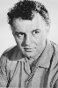
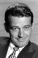

Country:United States, 117 minutes
Spoken languages:English
Genres:Horror
Director(s):Stuart Rosenberg
Writer(s):Sandor Stern, Jay Anson
Video Codec:Unknown
Number: 500


Certification:R
Storyline:
George Lutz and his wife Kathleen, move into their Long Island dream house with their children only for their lives to be turned into a hellish nightmare. The legacy of a murder committed in the house gradually affects the family and a priest is brought in to try and exorcise the demonic presence from their home.
Cast:  

Medium: Bluray,
Loaned: No
Aspect ratio: Unknown